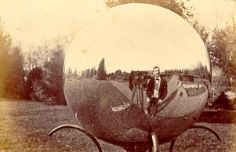

Response and Reactions to the Photograph

Photographer John Moran reflected in a spherical mirror at Judge Field's
garden (now Guernsey Hall) in 1868.
A daguerreotype of members of the class of 1843. This daguerreotype is believed to be the earliest group portrait of members of a class at Princeton.
Montgomery P. Simons (1816-1877), a well-known Philadelphia-area daguerreotypist, took daguerreotype portraits of many Princeton faculty and students in the 1840s and 1850s. This composite daguerreotype portrait from 1851 of the faculty was taken by Simons. It pictures, left to right, on the top, Stephen Alexander, President James Carnahan, Matthew B. Hope (?), and on the bottom, John Torrey, John Maclean, and John Duffield.
Joseph Henry, Professor of Natural Philosophy (what we call physics), utilized the medium of photography in his experiments on electricity and magnetism. He attempted to capture an electrical impression on a daguerrotype plate.
This photograph, taken by the photographer William R. Howell, shows the tallest and shortest men in the class of 1873. In the nineteenth century photographers came each year to Princeton to photograph the class. Students chose images from a list of photographs, creating a photograph album which documented their years at Princeton.
By 1891 photography, both the word and the medium, had become truly commonplace. Students took photographs with their own cameras and they surrounded themselves with photographs in their dormitory rooms. Here John M. Brennan (1892) and Chester Baylis (1892) sit reading by their fireplace, adorned with photographs, in their room in 14 North Dod Hall.
 Go to the next section of photographs.
Go to the next section of photographs.
Return to the Mudd Library home page.